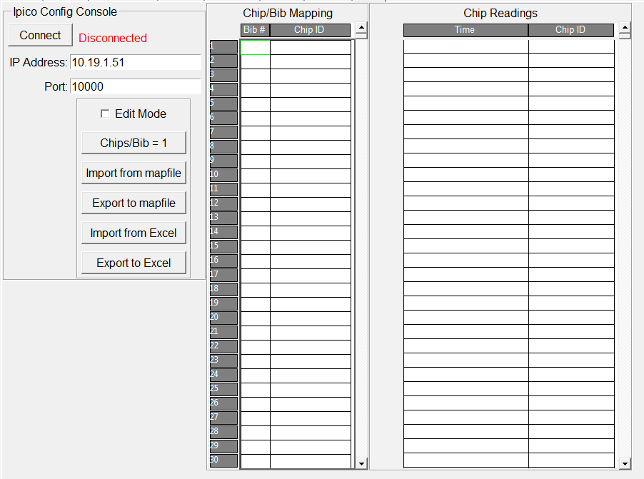

Note -- currently Ipico timing systems are supported.
By default, the Timing System page is not enabled. To enable, in the menu, click Timing -> Enable Chip Timing. This setting and the subsequent Ipico configuration will be saved with the race file. The Timing System page is only available when in Standalone mode or Timer mode.
Initially the Timing System page looks as follows:
